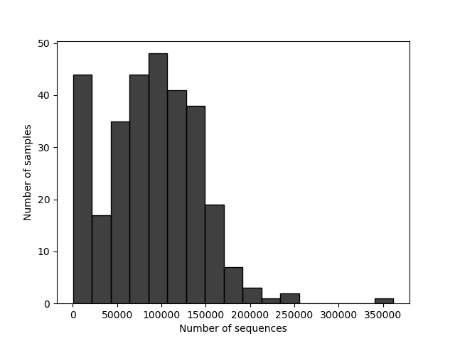

생물정보학 · KAIST BCS361
장내 미생물과 파킨슨병
공개 16S 서열에서 머신러닝 입력표를 만들기까지
파킨슨병 환자군과 대조군은 장내 미생물 구성에서 어떤 차이를 보일까? 공개 염기서열 자료 두 건을 골라 읽기 수를 살펴보고, 시료별 미생물 서열을 비교할 수 있는 표를 만들었습니다.

원자료를 고르는 기준
유럽 염기서열 아카이브(ENA)에서 환자군과 대조군이 있고, DNA 양 끝을 읽은 16S 자료를 찾았습니다. 선정한 자료는 PRJEB55464와 PRJEB27564입니다. 두 번째 자료는 시퀀싱 기록별로 정방향·역방향 파일을 짝지어 QIIME 2 입력 목록을 만들었습니다.
서열 파일을 시료별 표로
한 시료에서 읽힌 서열 수는 적게는 97개, 많게는 361,849개였습니다. 이 차이를 먼저 확인한 뒤, 시험 데이터에서 DADA2로 서열 오류와 키메라를 걸러냈습니다. 각 시료에서 서로 구별되는 서열 변이(ASV)가 몇 번 관찰됐는지 표로 만들고, 대표 서열에 미생물 분류명을 붙였습니다.
끊긴 분석을 이어서 실행하기
대표 서열을 분류할 때 메모리가 부족해 Colab 실행이 중간에 멈췄습니다. Docker로 QIIME 2 버전을 고정하고 단계별 산출물을 저장해 멈춘 지점부터 이어갈 수 있게 했습니다. 이렇게 준비한 표로 환자군과 대조군을 구분하는 랜덤 포레스트를 탐색했고, 개별 예측에 기여한 특징을 살펴보는 방법으로 SHAP을 제안했습니다.